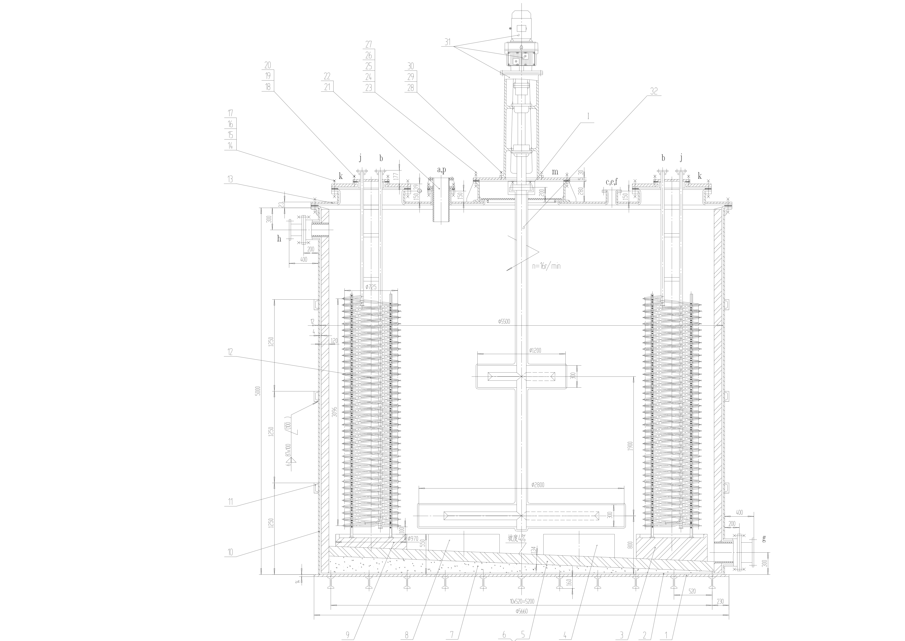
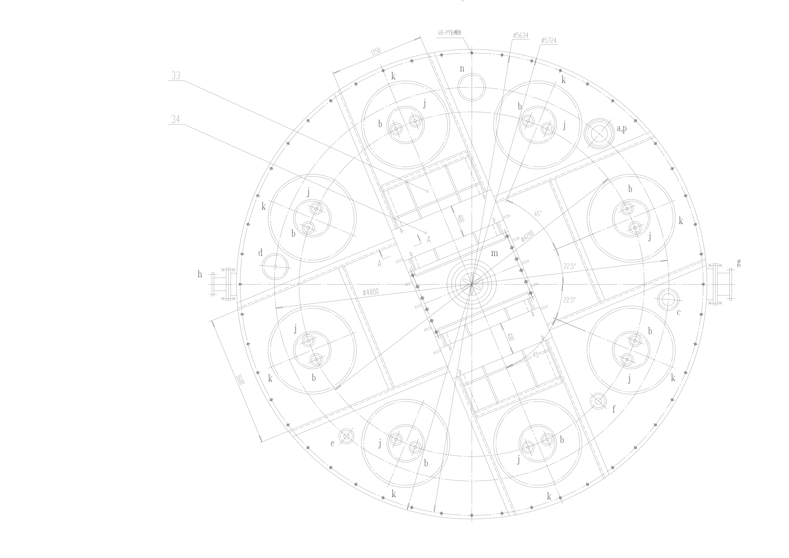
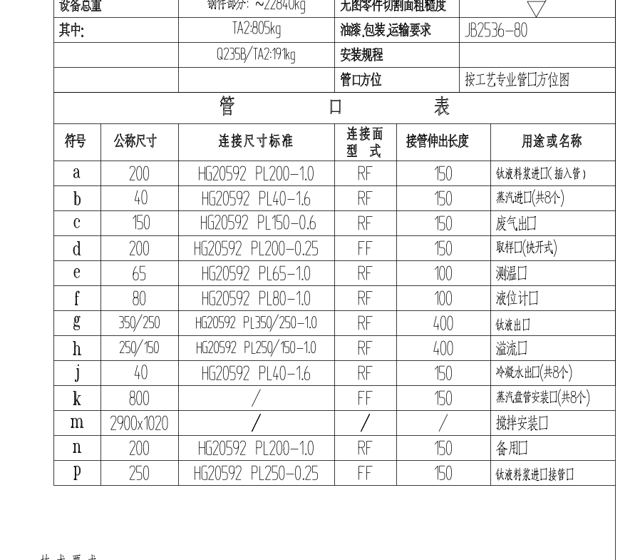
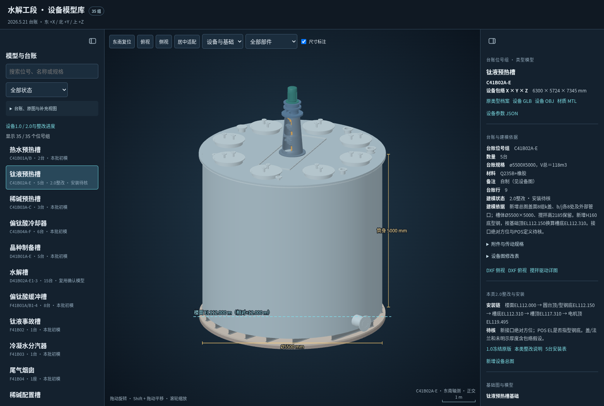
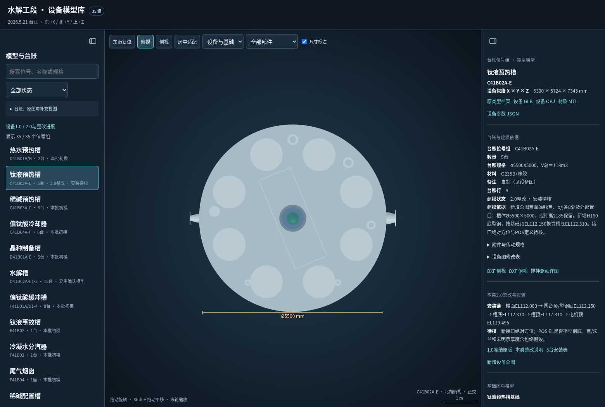

C41B02A—E · 2.0整改与对比
打开新模型与基础 · 1.0冻结原版 · 5台安装对照CSV · 几何校验
C41B02A—E · 第一类设备整改
1.0完整保存当前设备库、基础、72台安装表及27台待定位记录；2.0目前仅整改C41B02五台，其他94项不变。
已确认尺寸保留：槽体外径5500mm、直筒高5000mm、搅拌器高出槽体顶部2185mm。原搅拌、轴和叶轮保持形状，不重新缩放。
经用户选择，新盖面及外部接口采用新增《钛液预热槽总图》LMT0701-03-C3302-1：8组k检修盖，蒸汽进口b和冷凝水出口j各8处；另按管口表补a/p、c、d、e、f、n、g、h。新盖外径按φ5724，m安装框开口2900×1020。内部盘管、衬里、焊缝和螺栓细节不展开。
槽底新增H160型钢，按主视8×650=5200排布9道；I16截面细部与弦长端部属于展示包络。设备本体、底部型钢和土建基础可分别查看。
基础圆台几何不改：直径5700mm，总高150mm，其中50mm二次浇筑。圆台顶=设备型钢底，接触间隙为0mm。
安装链：楼面EL112.000 → 基础顶/型钢底EL112.150 → 槽底EL112.310 → 槽顶EL117.310 → 搅拌器顶EL119.495。设备安装原点仍放在原位置，含义明确改为型钢承托面；槽体及驱动在模型内上移160mm。
5台X/Y、旋转和镜像数值保留。新总图注明管口方位按工艺专业方位图，不能沿用旧6孔符号的匹配结论；这5台的新接口方位重新标待核。
待核与边界：POS EL112.150是否指型钢底仍需确认；第2—8张详图未提供。检修盖外径1000mm、b/j间距300mm、小口角度、法兰外廓和未明示厚度为量测/包络，不作为制造尺寸。φ5500保留用户确认外径，新图剖面内外径/底圈φ5560定义不作擅自替换。
模型几何和现有安装解释的相交检查与最终安装确认分别记录。该版本不是无待核项的施工模型。
| 位号 | X mm | Y mm | 旋转° | Y镜像 | 型钢底EL | 槽底EL |
|---|
| C41B02A | 9500.0 | 17999.5866 | 180.0 | 否 | 112.150 | 112.310 |
| C41B02B | 9500.0 | 46799.9867 | 0.0 | 是 | 112.150 | 112.310 |
| C41B02C | 9500.0 | 61200.4134 | 0.0 | 否 | 112.150 | 112.310 |
| C41B02D | 35000.0 | 17999.9866 | 0.0 | 是 | 112.150 | 112.310 |
| C41B02E | 35000.0 | 32400.4134 | 0.0 | 否 | 112.150 | 112.310 |
来源取舍与差异 · 全部参数与33条接口记录 · 新旧几何对比JSON
新增总图主视（按原图核读，页面坐标不作设备实尺寸）

新增总图俯视

管口表

设备与基础

盖面与外部接口
